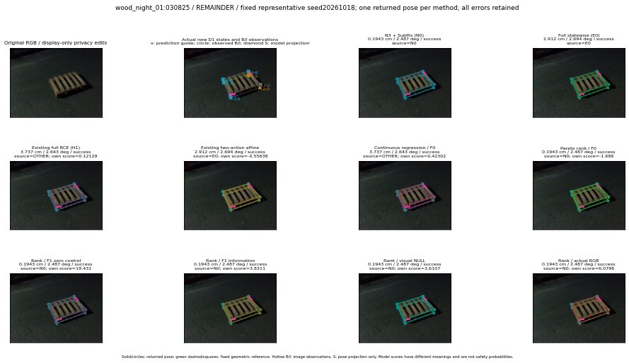

실선은 반환 자세, 초록 점선은 고정 기하 참조입니다. S는 영상 관측이 아닙니다. 점수는 모델별 의미가 다르며 보정된 안전 확률이 아닙니다. 개인정보 처리는 표시 사본에만 적용했습니다.
| 방법·seed | 위치 / 회전 / 공동성공 | 실제 출처 | 선택 후보 | 각 모델 자체 점수 |
|---|---|---|---|---|
| N0 | 0.1943 cm / 2.487 deg / success | N0 | N/A | N/A |
| E0 | 2.912 cm / 2.694 deg / success | E0 | N/A | N/A |
| E0_REGENERATED | 2.912 cm / 2.694 deg / success | E0 | E0_REGENERATED | N/A |
| POSEFIX_SUBPIX_PF_ANCHOR | 1.673 cm / 2.453 deg / success | OTHER | N/A | N/A |
| POSEFIX_SUBPIX_YOLO_ANCHOR | 1.673 cm / 2.453 deg / success | OTHER | N/A | N/A |
| D1_H1_MLP_s20261018 | 3.737 cm / 2.643 deg / success | OTHER | G10/ORIGINAL_WD/selected | 0.12128876149654388 |
| D1_H1_MLP_s20261019 | 3.737 cm / 2.643 deg / success | OTHER | G10/ORIGINAL_WD/selected | -0.23891820013523102 |
| D1_H1_MLP_s20261020 | 3.737 cm / 2.643 deg / success | OTHER | G10/ORIGINAL_WD/selected | -0.17731744050979614 |
| D1_H1_PAIR_MLP_s20261018 | 2.912 cm / 2.694 deg / success | E0 | E0_REGENERATED | -1.1570408344268799 |
| D1_H1_PAIR_MLP_s20261019 | 2.912 cm / 2.694 deg / success | E0 | E0_REGENERATED | -1.068933129310608 |
| D1_H1_PAIR_MLP_s20261020 | 2.912 cm / 2.694 deg / success | E0 | E0_REGENERATED | -0.7474894523620605 |
| D1_H1_PAIR_ROLE_AFFINE_s20261018 | 2.912 cm / 2.694 deg / success | E0 | E0_REGENERATED | -0.5563803911209106 |
| D1_H1_PAIR_ROLE_AFFINE_s20261019 | 2.912 cm / 2.694 deg / success | E0 | E0_REGENERATED | -0.6579526662826538 |
| D1_H1_PAIR_ROLE_AFFINE_s20261020 | 0.1943 cm / 2.487 deg / success | N0 | N0 | -0.5162217020988464 |
| R_CONT_F0_s20261018 | 3.737 cm / 2.643 deg / success | OTHER | G10/ORIGINAL_WD/selected | 0.4230150878429413 |
| R_CONT_F0_s20261019 | 3.737 cm / 2.643 deg / success | OTHER | G10/ORIGINAL_WD/selected | 0.5056582689285278 |
| R_CONT_F0_s20261020 | 3.737 cm / 2.643 deg / success | OTHER | G10/ORIGINAL_WD/selected | 0.4704267978668213 |
| R_ORDER_F0_s20261018 | 0.1943 cm / 2.487 deg / success | N0 | N0 | -1.6880009174346924 |
| R_ORDER_F0_s20261019 | 0.1943 cm / 2.487 deg / success | N0 | N0 | 0.10486200451850891 |
| R_ORDER_F0_s20261020 | 0.1943 cm / 2.487 deg / success | N0 | N0 | 6.452822208404541 |
| R_ORDER_F1_ZERO_s20261018 | 0.1943 cm / 2.487 deg / success | N0 | N0 | 19.43115997314453 |
| R_ORDER_F1_ZERO_s20261019 | 2.912 cm / 2.694 deg / success | OTHER | G13/ORIGINAL_WD/endpoint/35 | 2.21926212310791 |
| R_ORDER_F1_ZERO_s20261020 | 0.1943 cm / 2.487 deg / success | N0 | N0 | 7.228004455566406 |
| R_ORDER_F1_s20261018 | 0.1943 cm / 2.487 deg / success | N0 | N0 | 3.8311023712158203 |
| R_ORDER_F1_s20261019 | 0.1943 cm / 2.487 deg / success | N0 | N0 | 6.866207599639893 |
| R_ORDER_F1_s20261020 | 0.1943 cm / 2.487 deg / success | N0 | N0 | 1.995834469795227 |
| V_ORDER_NULL_s20261018 | 0.1943 cm / 2.487 deg / success | N0 | N0 | 3.610677480697632 |
| V_ORDER_NULL_s20261019 | 0.1943 cm / 2.487 deg / success | N0 | N0 | 1.8296962976455688 |
| V_ORDER_NULL_s20261020 | 0.1943 cm / 2.487 deg / success | N0 | N0 | 2.4141693115234375 |
| V_ORDER_RGB_s20261018 | 0.1943 cm / 2.487 deg / success | N0 | N0 | 6.0797600746154785 |
| V_ORDER_RGB_s20261019 | 0.1943 cm / 2.487 deg / success | N0 | N0 | 0.7305809259414673 |
| V_ORDER_RGB_s20261020 | 0.1943 cm / 2.487 deg / success | N0 | N0 | -10.169645309448242 |